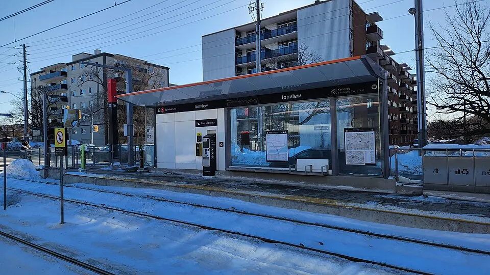

Signal
SignalStation atlas / Ionview
Station history
Ionview


Station history
Metrolinx published the proposed layout west of Ionview Road, with covered waiting areas and fare machines on the parallel platforms.
The surface stop opened at Ionview Road, the final eastbound stop before Kennedy.